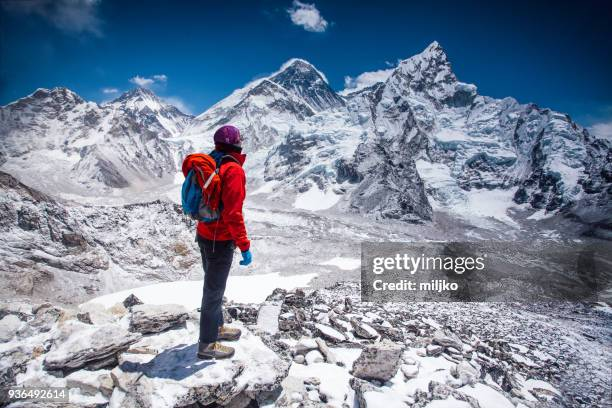

The Annapurna Base Camp (ABC) Trek is one of the most popular trekking routes in Nepal, taking you through lush rhododendron forests, traditional Gurung and Magar villages, and terraced farmland before reaching the base of the Annapurna massif. Standing at an elevation of 4,130 meters, Annapurna Base Camp offers a breathtaking 360-degree view of towering peaks, including Annapurna I, Machapuchare (Fishtail), and Hiunchuli.
The trek usually takes 7 to 12 days depending on the route and pace, and is considered moderately challenging, suitable for trekkers with a reasonable level of fitness. Along the way, you'll pass through charming teahouses, cross suspension bridges, and experience the rich culture and hospitality of the local communities.